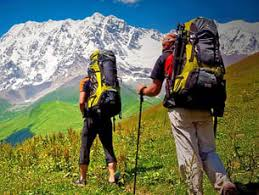
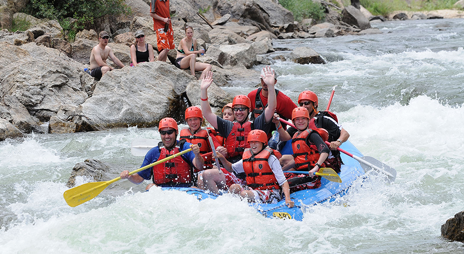
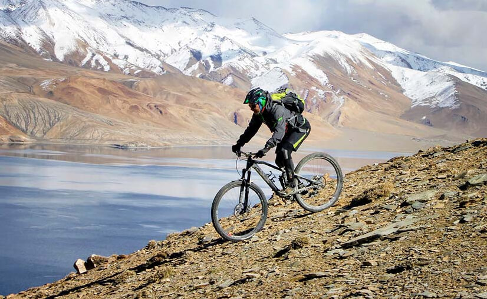
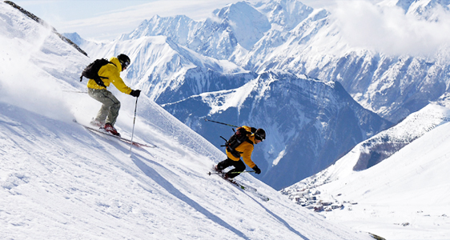

Kullu-Manali
Both Kullu and Manali are the top tourist
destinations of Himachal Pradesh with many places to
see such as the Great Himalayan National Park.
Manikaran is another place to see in Kullu which is
most famous for its Gurudwara. Kullu also provides
various adventure sports like water rafting on River
Beas and camping in Raison, surrounded by peach, plum
and apple orchards.
The greatest tourist attraction is Rohtang Pass. About
51 km from Manali, it is the gateway to Lahaul and Spiti,
and offers a chance to enjoy activities like paragliding,
skiing and trekking. Another tourist attraction in Manali is the Hadimba Devi Temple.
Nainital
The lifeline of Nainital is its lake - Naina Lake. It is one
of the most popular tourist destinations in Nainital. In
Nainital, one can find quiet and heavenly destinations for
self-introspection, cascading waterfalls, exotic widlife
to rejuvenate their toil.
The best time to visit Nainital is from October to March.
The climate of Nainital is pleasant for sighseeing in winter.
Popular tourist attractions are Mall Road, Naina Devi Temple,
Naina Peak etc.
Gulmarg
Nestled in the Pir Panjal Range in a cup-shaped valley, Gulmarg
has been specially touched by nature's splendid hand. This
magnificent tourist destination in the valley of Kashmir is
great for both a family, honeymoon and snow adventure lovers.
Gulmarg is extremely beautiful during winters, with skiing becoming
a favourite activity for many tourists. Popular tourists attractions
in Gulmarg are Gulamrg Gondola, Shark fin, Baba Reshi Shrine etc.
Shimla
Also known as the 'Queen of Hills', Shimla is a picturesque hill town
nestled at an altitude of 2205 metres in the enchanting state of
Himachal Pradesh. Verdant scenery, salubrious weather, snow-clad hills
and an old world charm, Shimla has always enticed nature lovers for years.
The popular 'Tattapani Point' on the banks of Satluj river, 50 km off Shimla
is a hub for water sport activites and offers a wonderful river rafting
experience. The 'Mall Road' bustles with small eateries selling momos,
roasted corn and ice creams. The famous Jakhoo and Tara Devi temple
are popular religious attraction in the vicinity.
Adventure Tourism

Trekking
Indian Himalayas make one of the best destinations for trekking
and hiking lovers in the world. It gives us innumerable trekking
trails to explore the natural beauty and thrill that is difficult
to find anywhere else. We guarantee an experience that keeps
you high on adrenaline, pumped, motivated, and most importantly, safe.
Learn more

River Rafting
No other jubilation can be compared to that of gushing through the
river rapids on a raft. India endowed with the radiant rivers flowing
down from the high altitudes of imposing Himlayan Range, can be
counted among the best destinations for river rafting in blue planet.
The major rivers rendering a perfect rafting expedition are Ganges,
Alaknanda, Satluj, Indus etc.
Learn more

Mountain Biking
Paddling has a new definition in India when it comes to mountain biking. Cycling alias
mountain biking tours has always been a favourite sport of many of us. This jaggy
yet bumpy ride that is nothing less than a staple for the adventures can be best
experienced on India's rough roads.
Learn more

Skiing
India is a paramount destination for skiing lovers throughout the globe. In Pahalgam
district of Jammu and Kashmir, the snow skiing is carried out heavily by the
adventurers. Another skiing paradise is Solang Nala in Himachal, where many skiing
tours are organized in winters.
Learn more